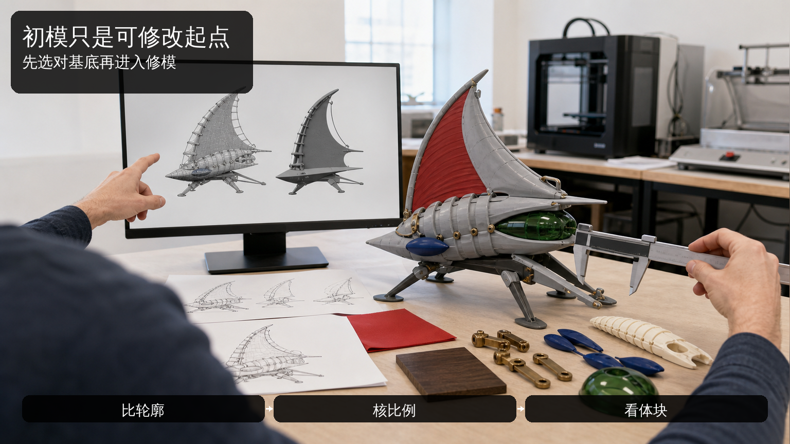
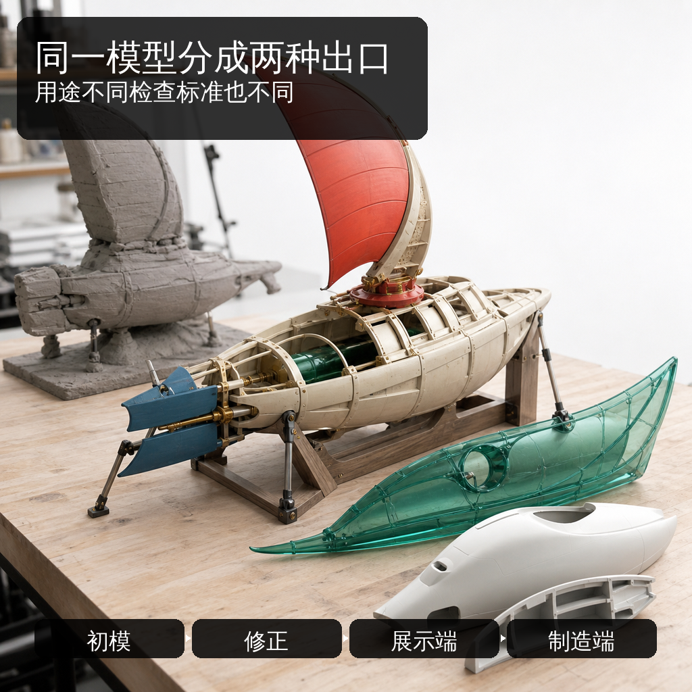
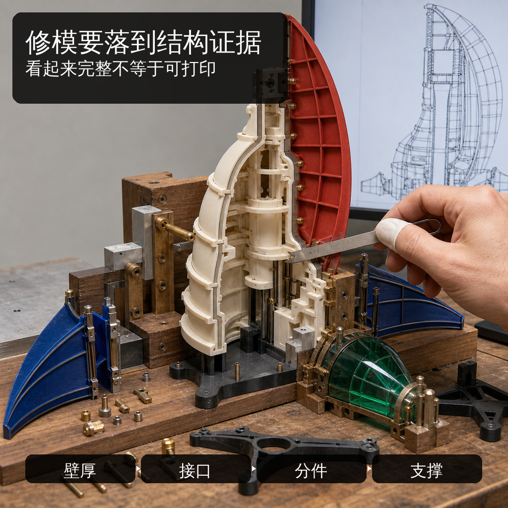
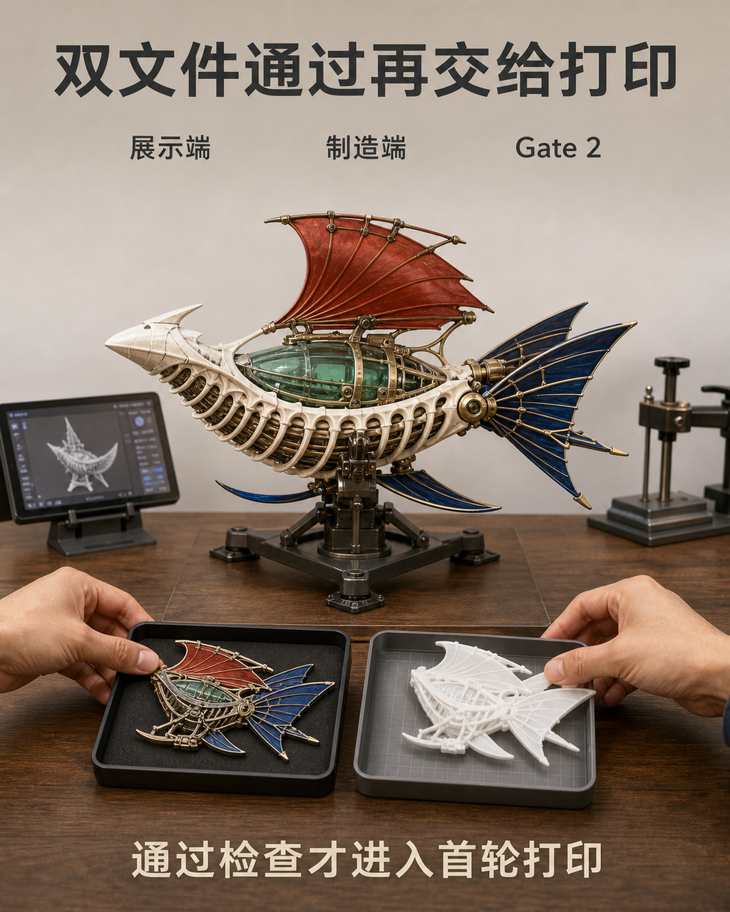

Day 2 到底做什么：从初模到双文件输出
Day 2 不是把一张视觉输入交给三维生成工具后等待“成品”。AI 三维初模通常先给出轮廓、比例和主要体块的候选解释，但网格里仍可能存在破面、重叠、悬空、过薄、错误连接和不稳定重心。同一个模型还要面对两种不同出口：网页展示需要保留材质、贴图和可浏览性，打印制造则需要封闭结构、真实厚度、合理拆件与支撑空间。 如果只用“看起来像”作为通过标准，问题会被带进导出和打印：展示文件可能过重、材质丢失或版本不明，打印文件可能无法切片、连接面积不足或部件无法装配。Day 2 要解决的不是一次生成是否惊艳，而是如何从多个初模中选出可修改基底，经过人工修正，形成来源一致、用途明确且能接受 Gate 2 检查的双文件输出。

具体问题
Day 2 不是把一张视觉输入交给三维生成工具后等待“成品”。AI 三维初模通常先给出轮廓、比例和主要体块的候选解释，但网格里仍可能存在破面、重叠、悬空、过薄、错误连接和不稳定重心。同一个模型还要面对两种不同出口：网页展示需要保留材质、贴图和可浏览性，打印制造则需要封闭结构、真实厚度、合理拆件与支撑空间。
如果只用“看起来像”作为通过标准，问题会被带进导出和打印：展示文件可能过重、材质丢失或版本不明，打印文件可能无法切片、连接面积不足或部件无法装配。Day 2 要解决的不是一次生成是否惊艳，而是如何从多个初模中选出可修改基底，经过人工修正，形成来源一致、用途明确且能接受 Gate 2 检查的双文件输出。
核心判断
初模的价值在于提供可比较、可修改的三维起点，不在于替代人工判断。先检查整体轮廓、比例、体块、姿态与核心识别特征是否值得继续，再检查网格连续性、厚度、连接、重心、拆件和装配。若基础身份已经偏离，继续精修只会把时间投入错误版本；若身份成立但结构有明确修正路径，才适合作为主模型。
双文件输出不是把同一文件改两个后缀。用于网页展示的 GLB 需要核对材质或贴图、坐标、尺度、文件体积与在线浏览；用于制造的 STL 需要核对封闭性、法线、真实尺寸、最小厚度、部件边界、定位关系和切片可读性。Gate 2 应把受控输入、修正后的主模型、GLB、STL 和部件方案对应到同一版本，再决定是否进入首轮打印。
步骤或标准
可按以下六项完成 Day 2 的模型筛选、人工修正与双文件交接。每项都要留下版本、截图或检查结果，不能只凭一次旋转预览判断。
- 生成并筛选初模：用 Gate 1 冻结的正侧背、材质和尺寸输入获得候选；逐个检查轮廓、比例、体块、姿态、面部、手部与配件，只保留身份稳定且修正成本可控的主模型，同时保存备选与失败记录。
- 核对受控版本：确认模型读取的是当天冻结的输入与尺寸，不混入旧图、未授权素材或临时新增设定；为主模型、备选模型和失败样本写清版本号与选择理由。
- 进行人工修模：在 Nomad 中修正破面、重叠、悬空、过薄和比例失真，合并无意义碎片，保留最有辨识度的轮廓与结构；每次大改后重新检查正侧背身份。
- 规划拆件与装配：区分主体、底座和配件，检查接触面积、定位件、装配方向、支撑空间和重心；细长或悬挑部位明确加厚、贴近主体、独立分件或降级处理。
- 分别导出双文件：GLB 保留适合网页展示的材质、贴图、尺度与坐标；STL 使用真实制造尺寸，检查封闭、法线、厚度、部件边界和切片可读性，禁止用改扩展名代替独立导出。
- 执行 Gate 2：把受控输入、主模型、GLB、STL、拆件方案和检查记录逐项对齐；只有身份、版本、厚度、连接、重心、装配与切片预检均可复核，才安排首轮打印，否则返回修模或启用备选、降级方案。
常见错误
以下错误会让“已经有三维模型”被误当成“已经具备展示和制造条件”。
- 看到正面轮廓相似就选定主模型，不旋转检查侧背、底部和遮挡处；后果是比例漂移、错误穿插与缺失连接在后续修模中集中暴露，主模型可能需要整体替换。
- 在错误初模上持续增加细节，希望靠精修挽救身份偏差；后果是时间被投入错误体块，核心轮廓仍不成立，备选方案反而失去比较窗口。
- 只修表面凹凸，不检查破面、薄片、重心、接触面积和拆件；后果是模型看起来更完整，却仍无法通过切片或稳定装配，首轮打印不能形成有效验证。
- 把 GLB 与 STL 当作同一文件的两个后缀；后果是展示端可能缺材质或过重，制造端可能尺度错误、网格不封闭，两个出口都无法按用途验收。
- 覆盖导出文件且不记录输入和版本；后果是无法确认网页、切片和后续修正读取哪一版模型，Gate 2 证据链断裂。
与五天课程的关系
当天主题直接对应 Day 2“AI 三维初模与 Nomad 人工修模”和 Gate 2。Day 1 / Gate 1 已经冻结对象、用途、尺寸、正侧背、材质、版权边界以及主 / 备 / 降级范围；Day 2 读取这套受控输入，比较初模，人工修正比例与结构，拆分主体、底座和配件，并分别准备 GLB 与 STL。
Gate 2 通过后，下一阶段进入 Day 3 的切片、打印、灰模和实体验证：先安排首轮打印，再通过清洗、固化、拆支撑、打磨与装配检查数字判断是否在真实材料中成立。若 Gate 2 未通过，应返回人工修模、替换主模型或启用降级方案，不能把未解决的厚度、连接或重心问题交给打印阶段。
事实 / 案例 / 完成度边界
本文依据公开课程基线中的 Day 2、Gate 2、GLB / STL 双文件用途和 Day 3 交接要求整理。当天规划的四张“昼潮脊舟”图片只用于示意创作者比较初模、人工修正、结构拆解与双文件交接的方法，属于课程方向示意；它们不是学员案例、真实课堂、真实委托、已完成打印或既有项目成果。真实案例只有在来源、授权、模型版本、切片记录、实物和完成状态均可核验时才会单独标注，示意图不能替代真实案例。
五天内可以推进的是与项目实际范围匹配的第一版受控模型、GLB、STL、拆件方案以及灰模或局部验证样，不代表所有项目都能完成商业级精修。完成度受输入成熟度、结构复杂度、尺寸、模型质量、设备、材料、打印排程与修正次数影响；课程不承诺一次生成可用、一次打印成功、固定实体件数、正式包装印刷、批量生产、正式展览、授权成交或销售结果。
报名入口
如果你已有 IP / 角色资产，可以在报名资料中说明现有原画、角色设定、三维文件或系列作品，版权状态、目标实体尺寸，以及当前最需要修正的比例、网格、拆件或打印问题；已有初模也会先按受控输入和 Gate 2 标准复核，而不是默认可直接制造。
如果你只有想法、草图或初步设定，也可以如实填写故事、关键词、希望做成的物品和现有设备，不需要先独自生成成熟三维模型。两类起点都会在 Day 1 锁定输入，再于 Day 2 建立可修改初模与双文件出口。公开报名地址：https://wj.qq.com/s2/27296919/9499/



长期招生｜青岛｜3–5 天短训｜评估后预约跟班｜每班最多 10 人。查看当前学习方案与费用
填写报名资料 →